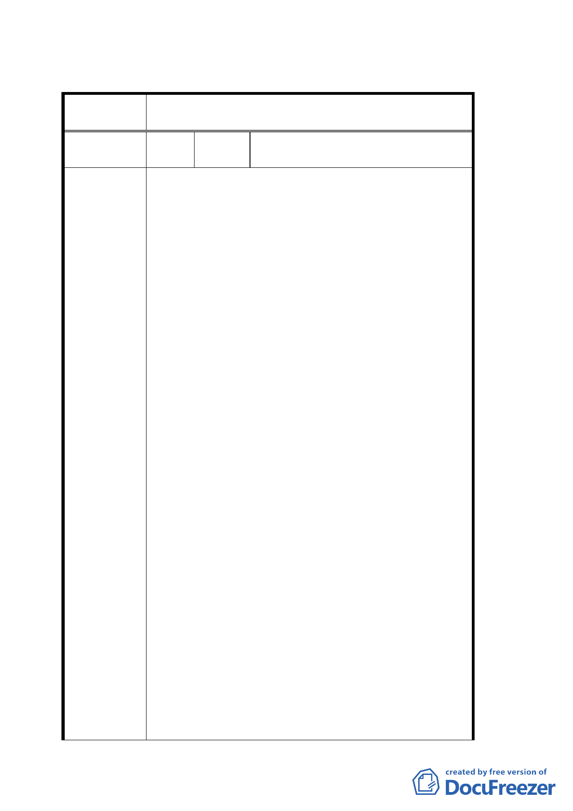

臺北市都市計畫委員會公民或團體所提意見綜理表
案
名
擬定臺北市大安區青田街保存區及聚落風貌保存專用
區細部計畫暨周邊地區都市設計管制事項案
編
號1
陳情人
蔡茂堂（台灣基督長老教會，台北和
平教會）
1. 本教會隸屬財團法人「台灣基督長老教會七星中
會」，教堂建築源自日據時代即座落於現址聚會，
目前每週日聚會人數已近 500 人；週間亦常成為里
民集會之據點（目前曾提供為都發局及文化局召開
公聽會之場所）。鑑於教會建築物老舊及未來發展
需要，並兼顧整體社區之需求，本教會將辦理重建。
2. 本教會向來關心本社區各項公益活動及配合洪里
長熱心推展鄰里事工。日前更特別設立專任牧師關
懷社區事工。關於教會重建亦曾由三位建築師做規
劃設計競圖評比，未來壹樓大部分空間將規劃日式
園藝型式開放工作社區休憩活動中心。此項規劃亦
須採行『臺北市建築物增設室內公用停車空間鼓勵
要點』配合設計。
3. 本教會座落於和平東路一段 183 巷與 11 衖交接之
角地，並非古蹟或日式房舍，雖毗鄰青田街廓，附
近現有建物如巷口之『國立編譯館』、『清真寺』、『台
陳 情 理 由 大教職員宿舍』及一般公寓建築等，均與青田街之
日式房舍相異，理應不受上述【青田街保存及聚落
風貌保存專用區計畫案】及【細部計畫暨周邊地區
都市設計管制案】之限制。然對於 貴委員會及社
區里民為保存青田街日式房舍及風貌之努力，本教
會除深表認同之外亦願在未來重建時針對發揚社
區風貌作出貢獻。
4. 本教會深盼重建後能成為青田街保存區及整體社
區里民喜愛之聚落中心（可供作簡報及文物保留空
間）。如受上述二項法案及相關建築法令高度或容
積率限制，勢必無法達成本會藉重建機會發揮壹樓
開放空間效益及貢獻服務社區里民之初衷美意。
5. 上述情由及下文之建議辦法如獲建管單位及都發
局、文化局等相關單位許可！本教會重建過程中必
將針對教堂造型、外觀材質色澤及一樓開放空間
（不設圍牆）庭園型式等，充份考量青田街保存區
之特有風貌透過建築師及社區里民充分溝通協
25